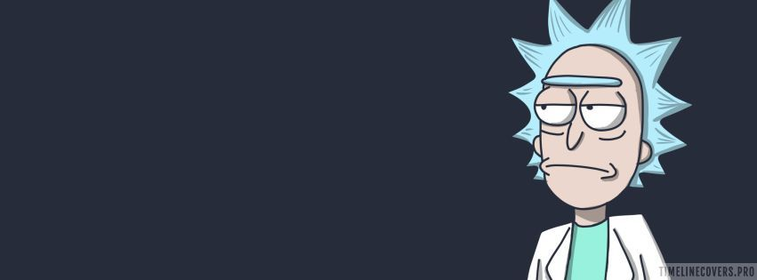
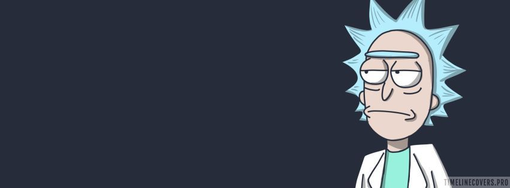

Científico alcohólico misántropo conocido por su comportamiento temerario, nihilista y su personalidad pesimista.
 

Científico alcohólico misántropo conocido por su comportamiento temerario, nihilista y su personalidad pesimista.

Tranquilo y calmado pero muy manipulable, en la escuela no le va del todo bien pués tiene dificultades.

Siempre está de buen humor y está animado. En su actitud se demuestra su optimismo.